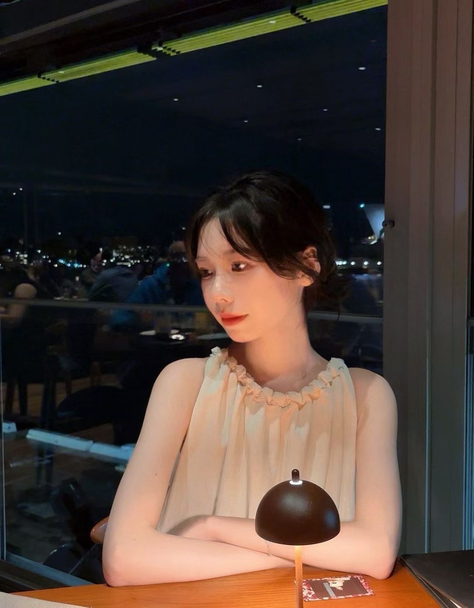

我的天使 · 私人告白
世界很大。
偏偏，是你。
万千光影里，
心动有了清晰的名字。
献给 · 王梓烨
01 / LITTLE MOMENTS
把温柔，
都留给你。
不急着给故事命名。
只是想把这一刻，好好珍藏。
灯火温柔，恰好是你。
想把一杯饮品的时间，留给你。
风景很远，心意很近。
下一次看风景，想站在你身旁。
万家灯火，偏偏看向你。
所有想说的话，慢慢说给你听。
02 / STARRY NIGHT, STARRY YOU
星落倾心，
万千星光都向你。
动画自动循环。聚焦画面后按空格暂停或继续，按 Escape 暂停；也可使用系统的减少动态效果设置。轻点画面可添一颗流星。
星落倾心
星光奔向大地，我奔向你。
03 / A NOTE FOR YOU
有些喜欢，
想慢慢说给你听。
梓烨：
有些喜欢，在开口之前，已经认真了很久。
于是，想用一份小小的勇气，让你看见。
想陪你看晚霞，也想听你聊聊，今天过得怎么样。
比起轰轰烈烈，更期待每一次真实的相处。
故事没有剧本，但下一幕，我想邀请你。
如果你也心动，我们就慢慢开始。
我喜欢你。不止今晚的星光。